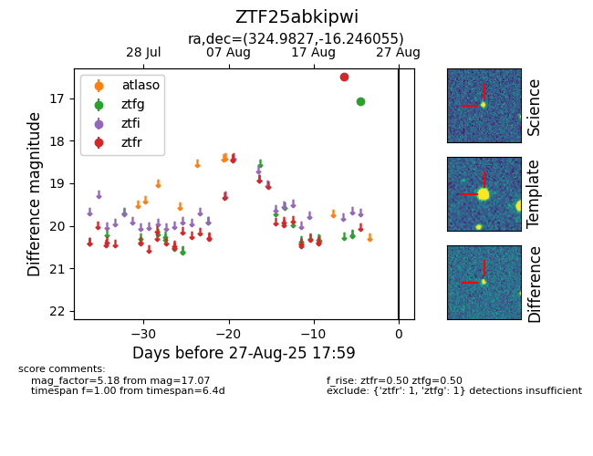

Target ZTF25abkipwi at 2025-08-27 17:59, see:
FINK: fink-portal.org/ZTF25abkipwi
Lasair: lasair-ztf.lsst.ac.uk/objects/ZTF25abkipwi
ALeRCE: alerce.online/object/ZTF25abkipwi
alt names
ZTF25abkipwi (ztf,fink)
coordinates:
equatorial (ra, dec) = (324.9827,-16.24605)
galactic (l, b) = (36.5192,-44.48077)
photometry
last ztfg=17.07, ztfr=16.50
1 ztfg, 1 ztfr detections
